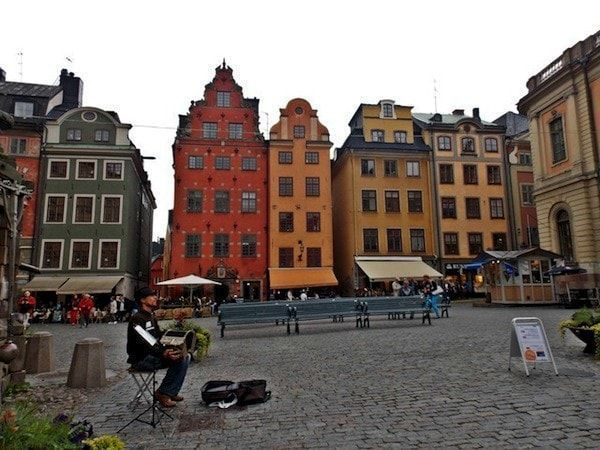

Cosas de Suecia que no conocias
Viajar por Suecia es viajar por dos estaciones, una de invierno y otra de verano. Entre medias algo parecido a lo que puede ser el otoño primavera. Las experiencias de una y otra son totalmente diferentes. En verano, puedes realizar senderismo por más de 400 rutas, bañarte en largas playas de arena blanca, hacer un recorrido por el archipiélago de Estocolmo o disfrutar con el festival de Verano.
Para los amantes de los destinos de invierno Suecia no se conforma solo con ofrecer frío y hielo a raudales. Aquí, las experiencias son lo fundamental. La reina, contemplar auroras boreales. Dormir en un hotel de hielo o e el TreeHotel de La Laponia sueca. Recorrer los paisajes nevados en un trineo de perros o vivir una experiencia sami en un campamento.


Ya sé que es mencionar la palabra Estocolmo y lo primero que piensas es en frío. No te falta razón. Hay que tener en cuenta que Suecia es un país nórdico. Pero, aunque pueda hacer fresquito, es tan cool que querrás visitarla en cualquier época del año. Te aseguro que una vez que la conozcas te vas a enamorar de ella como me sucedió a mí.


Estocolmo y sus maravillas
En este blog, he incluido algunos datos prácticos de cómo llegar y moverse allí. Puedes ver información del metro de Estocolmo. Cuánto cuesta comer, cuál es la comida más tradicional y dónde encontrar buenos restaurantes a buen precio en Estocolmo.
El metro de Estocolmo
El metro de Estocolmo está gestionado por la compañía de transporte metropolitano Storstockholms Lokaltrafik , que también se encarga del servicio de tranvías, autobuses y los trenes que conectan la capital sueca con otras ciudades limítrofes. Dispone de siete líneas, agrupadas en tres colores: azul, rojo y verde.
La Plaza Stortorget
La plaza de Gamla Stan. Sus fachadas de estilo alemán, colores suaves y ventanas decoradas te atrapan desde el minuto uno. Las terrazas para tomar algo escuchando algún músico callejero le dan el toque bohemio.